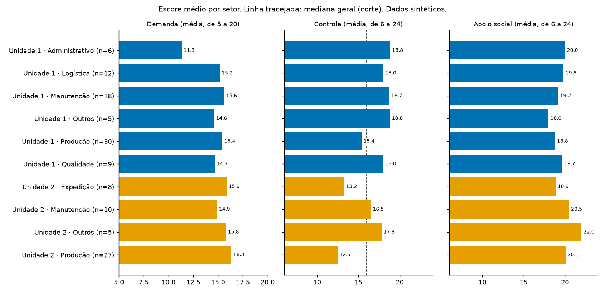
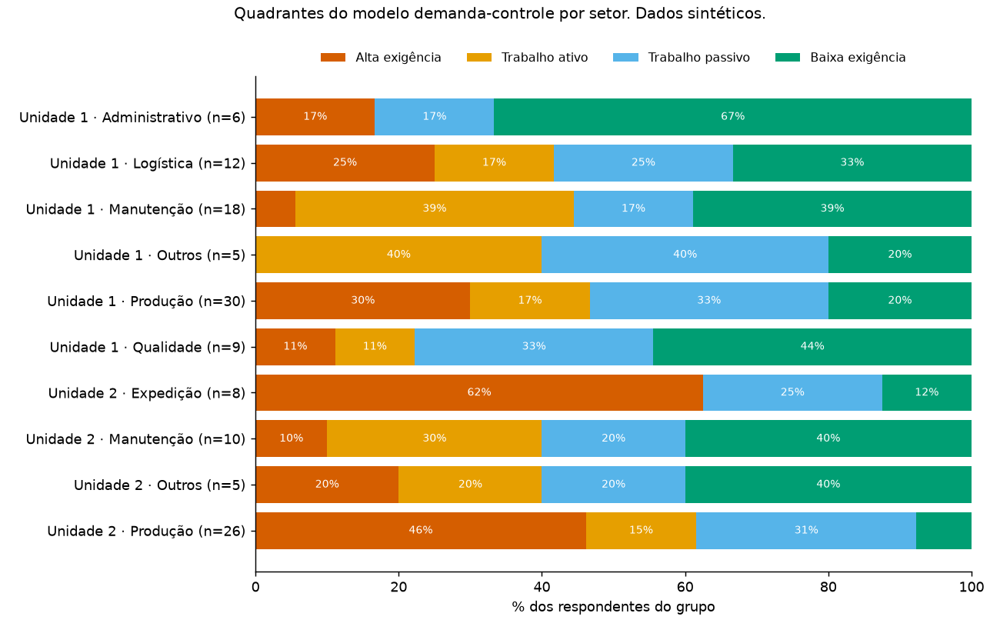

Dados sintéticos. Todas as respostas foram geradas por computador. Os números mostram o método funcionando e não descrevem nenhuma empresa real.
Instrumento: versão resumida da Job Stress Scale adaptada para o português (Alves et al., 2004), com 17 perguntas: 5 de demanda, 6 de controle e 6 de apoio social. Cada resposta vale de 1 a 4; dois itens são invertidos; o escore de cada dimensão é a soma dos itens (demanda de 5 a 20; controle e apoio de 6 a 24). Regras de pontuação conforme Aguiar et al. (2010).
Corte para “alto”: escore acima da mediana de todos os respondentes (demanda 16,0; controle 16,0; apoio 20,0). Setores com menos de 5 respondentes foram agrupados em “Outros”. Comparação entre unidades: teste de Mann-Whitney e correlação bisserial por postos.
| Dimensão | Itens | n | Alfa de Cronbach |
|---|---|---|---|
| Demanda | 5 | 130 | 0,81 |
| Controle | 6 | 129 | 0,87 |
| Apoio social | 6 | 130 | 0,80 |
| Controle: discernimento intelectual | 4 | 129 | 0,81 |
| Controle: autoridade sobre decisões | 2 | 130 | 0,77 |
Média (desvio-padrão) de cada dimensão.
| Unidade | n | Demanda | Controle | Apoio | % alta exigência | % baixo apoio |
|---|---|---|---|---|---|---|
| Unidade 1 | 80 | 15,0 (3,5) | 17,3 (4,3) | 19,2 (3,5) | 19 | 60 |
| Unidade 2 | 50 | 15,9 (3,2) | 14,0 (4,5) | 20,2 (3,8) | 39 | 38 |
| Unidade | Setor | n | Demanda | Controle | Apoio | % alta exigência | % baixo apoio |
|---|---|---|---|---|---|---|---|
| Unidade 1 | Administrativo | 6 | 11,3 (4,0) | 18,8 (3,8) | 20,0 (2,4) | 17 | 67 |
| Unidade 1 | Logística | 12 | 15,2 (3,8) | 18,0 (4,3) | 19,8 (4,0) | 25 | 42 |
| Unidade 1 | Manutenção | 18 | 15,6 (2,5) | 18,7 (3,9) | 19,2 (3,6) | 6 | 56 |
| Unidade 1 | Outros | 5 | 14,6 (4,7) | 18,8 (5,2) | 18,0 (3,2) | 0 | 80 |
| Unidade 1 | Produção | 30 | 15,4 (3,5) | 15,4 (3,7) | 18,8 (3,4) | 30 | 67 |
| Unidade 1 | Qualidade | 9 | 14,7 (2,8) | 18,0 (5,1) | 19,7 (4,3) | 11 | 56 |
| Unidade 2 | Expedição | 8 | 15,9 (3,4) | 13,2 (2,9) | 18,9 (4,4) | 62 | 62 |
| Unidade 2 | Manutenção | 10 | 14,9 (4,7) | 16,5 (5,0) | 20,5 (3,3) | 10 | 30 |
| Unidade 2 | Outros | 5 | 15,8 (1,6) | 17,8 (2,3) | 22,0 (1,6) | 20 | 20 |
| Unidade 2 | Produção | 27 | 16,3 (2,7) | 12,5 (4,4) | 20,1 (4,0) | 46 | 37 |

| Unidade | Alta exigência | Trabalho ativo | Trabalho passivo | Baixa exigência |
|---|---|---|---|---|
| Unidade 1 | 15 | 17 | 22 | 26 |
| Unidade 2 | 19 | 8 | 13 | 9 |

Apoio social:
| Unidade | Alto apoio | Baixo apoio |
|---|---|---|
| Unidade 1 | 32 | 48 |
| Unidade 2 | 31 | 19 |
| Dimensão | Mediana U1 | Mediana U2 | U | p | Efeito r |
|---|---|---|---|---|---|
| Demanda | 15,0 | 17,0 | 1679,0 | 0,123 | -0,16 |
| Controle | 17,5 | 15,0 | 2715,5 | 0,000 | 0,39 |
| Apoio social | 19,0 | 21,0 | 1613,0 | 0,063 | -0,19 |
O efeito r vai de −1 a 1; positivo indica escores maiores na Unidade 1. Com amostras deste tamanho, o teste só detecta diferenças grandes: um p alto não prova que as unidades são iguais.
[A ESCREVER PELO RAFAEL]
Este arquivo vira a seção "Interpretação" do relatório. Escreva em parágrafos simples, separados por uma linha em branco, e rode `python scripts/gerar_relatorio.py` de novo.
Roteiro sugerido: o que o padrão de demanda, controle e apoio sugere sobre a organização do trabalho em cada setor; que hipóteses merecem ser investigadas com outros métodos (entrevistas, observação); o que este resultado NÃO permite afirmar.
Alves MGM, Chor D, Faerstein E, Lopes CS, Werneck GL. Versão resumida da “job stress scale”: adaptação para o português. Rev Saúde Pública. 2004;38(2):164-171.
Aguiar OB, Fonseca MJM, Valente JG. Confiabilidade (teste-reteste) da escala sueca do Questionário Demanda-Controle entre Trabalhadores de Restaurantes Industriais. Rev Bras Epidemiol. 2010;13(2):212-222.